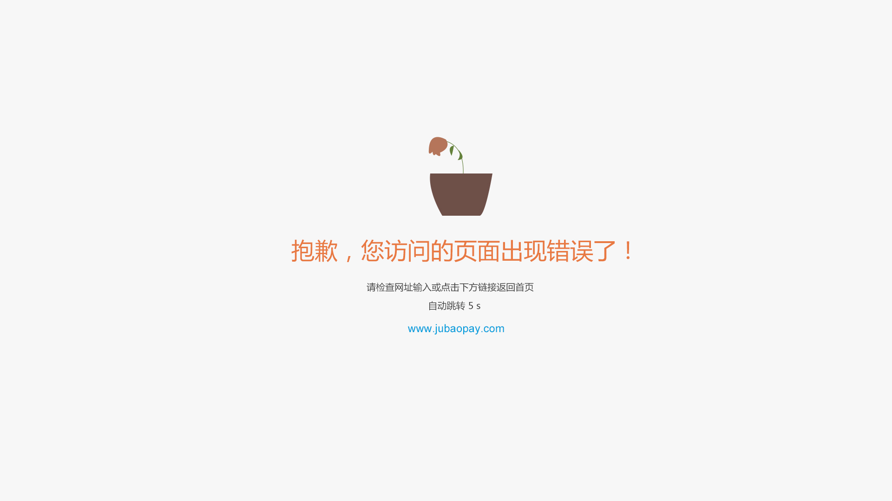
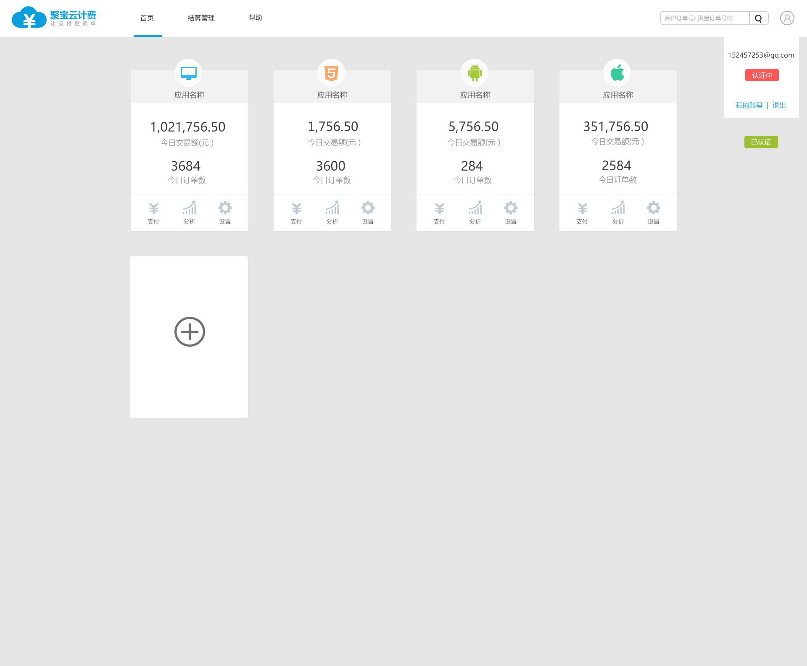
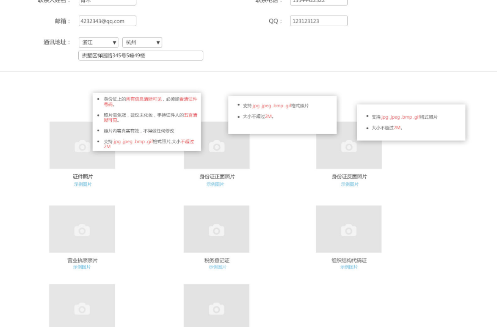
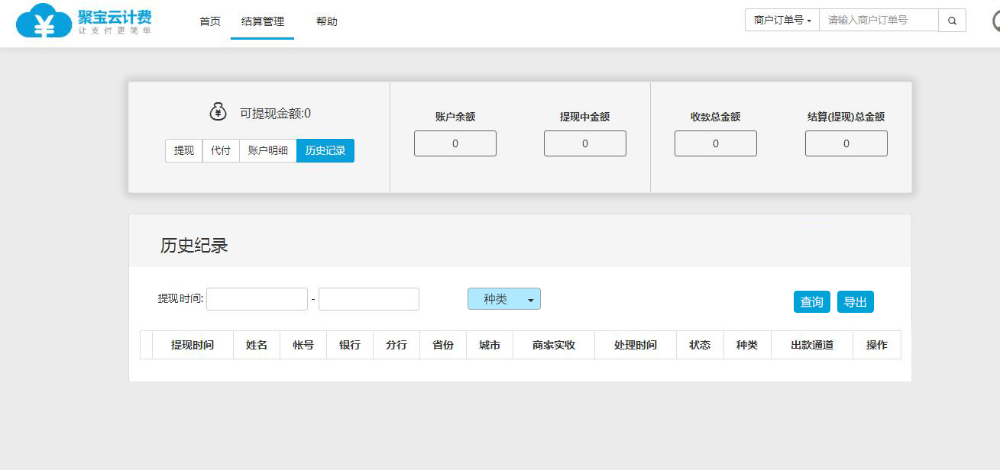
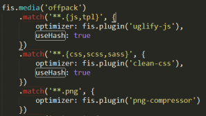
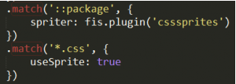
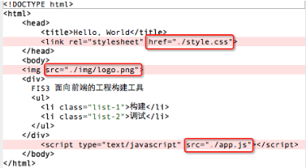
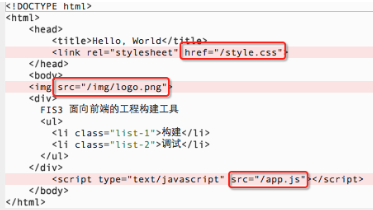
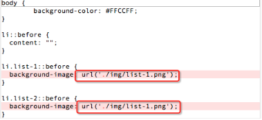
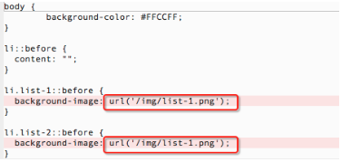

工作总结
--陈琪超
很高兴从 2016.05.30 加入杭州凡伟网络科技有限公司的大家庭。时间很快，两个多月似匆匆眨眼，从进公司对环境的陌生到逐渐熟悉，对代码定义的不规范到逐渐规范， 对命名规则的面向对象到面向属性的过程不断改变，逐渐提升自己的代码规范和编写能力,不断学习新的知识，弥补自己的不足，在学习过程中也会有一种恐慌，就是越学 越觉得什么都不会，又觉得要学的东西好多时间来不及，矛盾心理。
很感谢凡伟给我这个机会，让我对WEB前端这个职业有了更深入的了解，也感谢师傅在这些时日的悉心教导，只是本人愚钝，有些还是没有完全明白，但是我还是会努力去 学，要努力提高自己的自学能力和逻辑能力，加强自己解决问题的能力。以下是我在凡伟两月的工作内容以及学习内容：
《玩呗》这个项目是我来公司的第一个项目，我记得当时上午开会说下午要开始着手项目，对于第一天来的我其实内心是崩溃的， 因为有很多方面都是不知道的，更重要的是以前也没有做过一个要上线的项目，边开会边冒汗。不过后来在完成项目的时候，师傅会时不时的提醒我这边 用什么方法，那边怎么写，慢慢的也就写完了这个页面，在写这个项目的过程中，困难的还是js的一部分代码，后来我用百度等一些方法解决了一些问题， 由此得出，要好好学习js以及好好利用网络。
倒计时自动跳转
mouselever mouseout xxx="xxx"
popover
bootstrap 栅格系统
《收款宝》收款宝是我来公司参与度最高的一个项目，很多页面都是我写的，当然难的部分也还是师父解决的。 《收款宝》这个项目让我收获最大的就是css的代码规范，为了避免bootstrap以及其他的代码冲突，在定义的 时候特意加了“y-”，自定义的代码有一个专门的custom.css文件，像一些共用的margin、padding、width、height 等也有一个自己的box.css文件等，这些分门别类的文件是为了在写代码的时候方便归类和寻找，当最后提交项目的 时候回合并成一个文件，这个也就归功于fis3构建工具，但对于这个构建工具，我还需要多学习。
《SDK》这个项目我收获最大的就是 bootstrap 栅格系统的应用和 @media 媒体查询的应用。 当时是有两张效果图，一张竖屏一张横屏，我以为是要做两个页面，后来师傅说只要用栅格 系统加媒体查询就可以解决，着实又学了一招,根据屏幕宽度去调整页面的显示形式，由于 bootstrap3的栅格系统不能满足页面需求，又自己重新定义了一个col-ms-x，col-ms-push-x。
学习
HTML5：
简化了文档类型的声明 <!doctype html>
文档中载入JavaScript脚本文件type不是必须的
...
代码规范：
使用小写元素名和属性名
关闭所有HTML元素 <p></p>
不必要的空行和缩进
...
新增标签：
<header> <footer>
<audio> <video>
<section> <article>
全新的表单标签
...
canvas
svg
CSS3：
border-radius
box-shadow
border-image
background-image
background-size 背景百分比
linear gradients 线性渐变
radial gradients 径向渐变
text-shadow
text-overflow
word-wrap
word-break
@font-face {
font-family: myFirstFont;
src: url(sansation_bold.woff);
font-weight:bold;
}
transform (2d)
transforms (3d)
transition
animation
@media
BOOTSTRAP：
看了一遍源码
用的较多的:
按钮 btn
btn-default/primary/success/info/danger/link
btn-xs/sm/lg
摸态框
Git命令：
Git是一个开源的分布式版本控制系统，可以有效、
高速的处理从很小到非常大的项目版本管理。
$ sudo apt-get install git 安装git
$ git init 把目录变成仓库
$ git status 查看结果
$ git add readme.txt 添加文档
$ git commit -m "add distributed" 提交项目
$ git clone https://github.com/git/git.git 克隆
$ git checkout -b dev 创建切换分支
$ git branch 查看当前分支
$ git push 推送分支
$ git pull 同步远程
FIS3：
node和npm 都安装完的前提下
安装fis3 npm install -g fis3
fis3 release -wl 对代码进行监听
fis3 install -g 插件名 安装插件
添加MD5戳以及资源的合并压缩

CssSprite图片合并

资源定位：
HTML资源定位前

HTML资源定位后

CSS资源定位前

CSS资源定位后

资源定位就是把相对路径改成了绝对路径
学习中 ...
两个多月的工作下来，学到了蛮多的，也有很多的不足，依然觉得自己对前端的认识还是太浅显，前端这个行业，要学的还有很多，只有不断的学习，才能够不断进步。 谢谢！